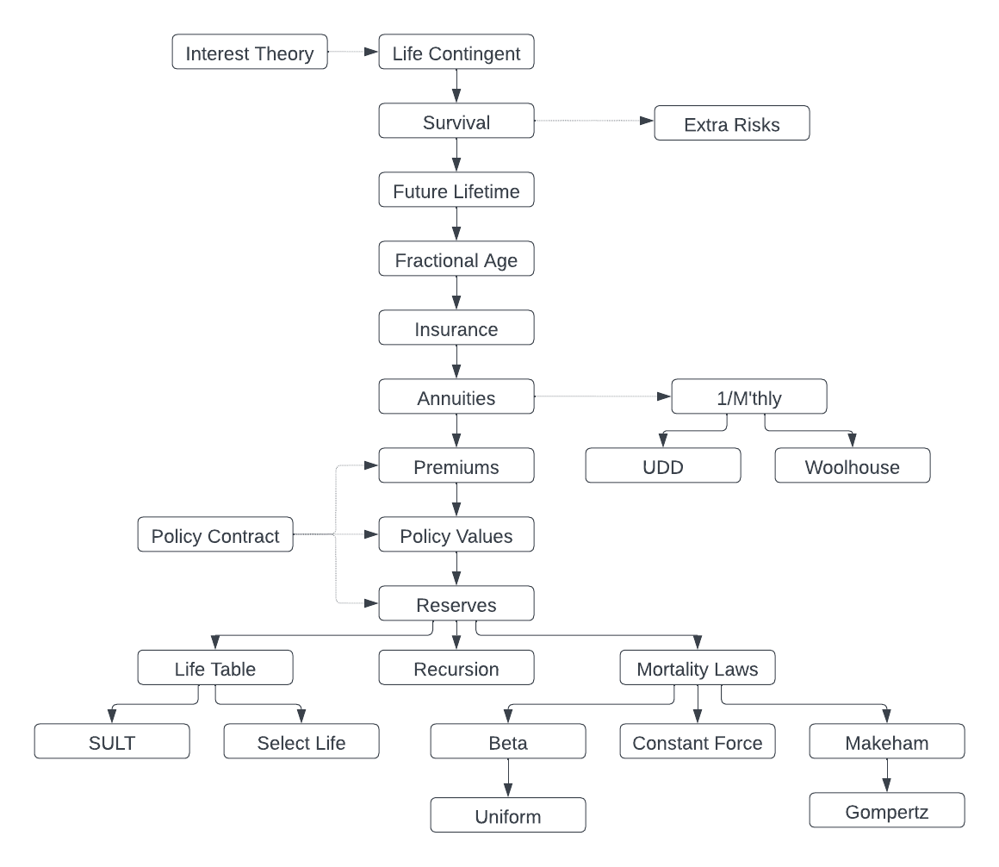

Introduction#
actuarialmath – Life Contingent Risks with Python
This package implements fundamental methods for modeling life contingent risks, and closely follows traditional topics covered in actuarial exams and standard texts such as the “Fundamentals of Actuarial Math - Long-term” exam syllabus by the Society of Actuaries, and “Actuarial Mathematics for Life Contingent Risks” by Dickson, Hardy and Waters. The resources listed below should be helpful for getting started. The code chunks in this complete Colab, or Jupyter notebook, demonstrate how to solve each of the sample FAM-L exam questions released by the SOA.
The actuarial concepts, as shown in this graphic, are introduced and modeled hierarchically, and realized by corresponding derivations of Python classes.

Quick Start#
pip install actuarialmathStart Python (version >= 3.10) or Jupyter-notebook
a. Select and import a suitable subclass to initialize with your actuarial assumptions, such as
MortalityLaws(or a special law likeConstantForce),LifeTable,SULT,SelectLifeorRecursion.b. Call appropriate methods to compute intermediate or final results, or to
solveparameter values implicitly.c. If needed, adjust the answers with
ExtraRiskorMthly(or itsUDDorWoolhouse) classes.
Examples#
SOA FAM-L sample question 5.7:
Given \(A_{35} = 0.188\), \(A_{65} = 0.498\), \(S_{35}(30) = 0.883\), calculate the EPV of a temporary annuity \(\ddot{a}^{(2)}_{35:\overline{30|}}\) paid half-yearly using the Woolhouse approximation.
from actuarialmath.recursion import Recursion
from actuarialmath.woolhouse import Woolhouse
# initialize Recursion class with actuarial inputs
life = Recursion().set_interest(i=0.04)\
.set_A(0.188, x=35)\
.set_A(0.498, x=65)\
.set_p(0.883, x=35, t=30)
# modfy the standard results with Woolhouse mthly approximation
mthly = Woolhouse(m=2, life=life, three_term=False)
# compute the desired temporary annuity value
print(1000 * mthly.temporary_annuity(35, t=30)) # solution = 17376.7
SOA FAM-L sample question 7.20:
For a fully discrete whole life insurance of 1000 on (35), you are given
First year expenses are 30% of the gross premium plus 300
Renewal expenses are 4% of the gross premium plus 30
All expenses are incurred at the beginning of the policy year
Gross premiums are calculated using the equivalence principle
The gross premium policy value at the end of the first policy year is R
Using the Full Preliminary Term Method, the modified reserve at the end of the first policy year is S
Mortality follows the Standard Ultimate Life Table
i = 0.05
Calculate R − S
from actuarialmath.sult import SULT # use Standard Ultimate Life Table
from actuarialmath.policyvalues import Contract
life = SULT()
# compute the required FPT policy value
S = life.FPT_policy_value(35, t=1, b=1000) # is always 0 in year 1!
# input the given policy contract terms
contract = Contract(benefit=1000,
initial_premium=.3,
initial_policy=300,
renewal_premium=.04,
renewal_policy=30)
# compute gross premium using the equivalence principle
G = life.gross_premium(A=life.whole_life_insurance(35), **contract.premium_terms)
# compute the required policy value
R = life.gross_policy_value(35, t=1, contract=contract.set_contract(premium=G))
print(R-S) # solution = -277.19
Resources#
Colab or Jupyter notebook, to solve all sample SOA FAM-L exam questions
Github repo and issues
Sources#
SOA FAM-L Sample Questions: copy retrieved Aug 2022
SOA FAM-L Sample Solutions: copy retrieved Aug 2022
Actuarial Mathematics for Life Contingent Risks, by David Dickson, Mary Hardy and Howard Waters, published by Cambridge University Press.
Contact#
Github: https://terence-lim.github.io